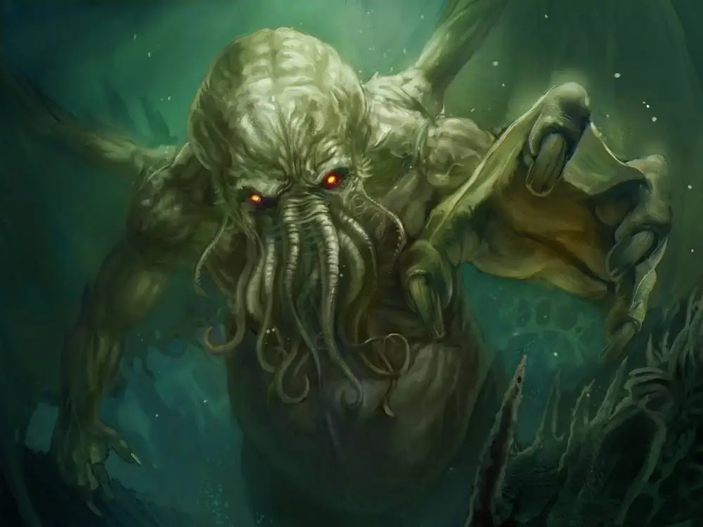

Được các nhà nghiên cứu thuộc Cục quản lý Khí quyển và Đại dương Mỹ (NOAA) phát hiện và ghi lại năm 1997, "The Bloop" phát ra ở độ sâu 4.300 mét tại vùng biển cách Chile gần 2.000km về phía Tây.
Sở dĩ "The Bloop" gây tranh cãi hàng chục năm nay vì tần số mà nó được ghi nhận lớn hơn nhiều so với bất cứ tiếng ồn do động vật biển nào gây ra. Tiếng động này có thể truyền đi với một khoảng cách lên tới 5.000km!
Loạt các giả thuyết về sự nứt vỡ của núi băng, tiếng kêu của cá voi xanh khổng lồ vẫn chưa làm "thỏa mãn" về nguồn gốc của âm thanh kỳ quái này.
The Bloop
Bạn có biết, đại dương chiếm đến 3 phần 4 diện tích bề mặt Trái Đất nhưng những gì chúng ta biết về nó chỉ là hạt cát trên sa mạc. Và âm thanh "The Bloop" là một trong bí ẩn khiến các nhà khoa học phải "đau đầu" suốt 23 năm qua. Năm 1997, Cục quản lý Khí quyển và Đại dương Quốc gia Mỹ (NOAA) phát hiện âm thanh tần số thấp nhưng biên độ cao, gọi là Bloop. Âm thanh "quái vật" dưới đáy đại dương sâu thẳm này phát ra từ độ sâu khoảng 4,3 km ở vùng biển cách Chile 1.750 km về phía Tây. Rất nhiều người liên tưởng chủ nhân của "The Bloop" chính là quái vật Cthulhu trong tác phẩm của nhà văn H.P.Lovecraft nổi tiếng. Đó là một con quái vật khổng lồ đầy xúc tu phát ra tiếng kêu bí ẩn. Sở dĩ có liên tưởng như vậy bởi khu vực thu được "The Bloop" rất gần với vị trí được mô tả về R'lyeh - thành phố bị chìm dưới đáy đại dương và cũng là nơi giam giữ quái vật Cthulhu được nhà văn H. P. Lovecraft viết trong truyện ngắn nổi tiếng "The Call of Cthulhu". Một số nhà nghiên cứu về UFO lại cho rằng, có thể dưới đáy đại dương vẫn tồn tại các căn cứ của người ngoài hành tinh và âm thanh này phát ra là do các hoạt động của họ. Phần lớn người khác lại tin rằng, đây là âm thanh của cá voi xanh gây nên. Tuy nhiên, âm thanh của cá voi xanh chỉ có thể được ghi nhận trong vòng 1.000 dặm, tức là 1 phần 3 khoảng cách mà âm thanh The Bloop có thể truyền đi. Âm thanh này được khẳng định là không thể được tạo ra bởi con người. Vài nghiên cứu đã chỉ ra không hề có điểm tương đồng nào giữa âm thanh đó với những địa chấn thường thấy dưới đáy biển như núi lửa. Một số nhà khoa học đưa ra giả thuyết rằng, chính hiện tượng tan chảy núi băng ở điểm cực là nguyên nhân tạo ra âm thanh kì dị nói trên. Năm 2008, trong quá trình theo dõi tảng băng trôi khổng lồ A53a sắp tan gần đảo South Georgia, hình bóng của âm thanh "The Bloop" lại xuất hiện.  Hình ảnh minh họa. Kết quả thu âm cho thấy, tiếng nứt gãy của những tảng băng lớn trên biển có tiếng tương tự và đủ mức cường độ âm để truyền đi xa ở khoảng cách 5.000 km. Tuy nhiên, câu trả lời này không đủ làm thỏa mãn những người hiếu kì bởi rất nhiều người vẫn tin vào sự hiện diện của một thủy quái biển phát ra âm thanh "The Bloop".Văn bản được soạn bởi Bích Phương · Hình ảnh và thông tinh từ nguồn wed.